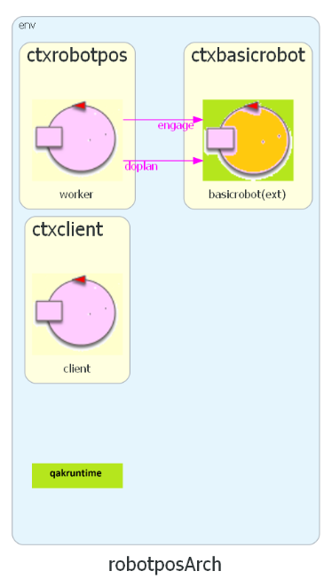
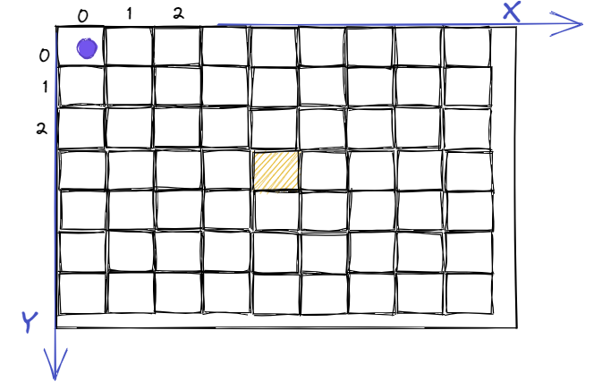

Posizionamento del robot¶
Consideriamo il seguente problema.
robotpos¶
Realizzare un servizio che offra a un client la possibilità di muovere un DDR robot dalla sua posizione corrente in una posizione precisata dal client.
Analisi dei requisiti¶
servizio: …
DDR robot: …
posizione: …
posizione corrente: …
Modello del sistema (Sprint0)¶
Il sistema è costutuito da tre macro-componenti, come espresso dal seguente modello:
System robotpos
Context ctxrobotpos ip [host="localhost" port=8111]
Context ctxbasicrobot ip [host="127.0.0.1" port=8020]
Context ctxclient ip [host="ipclient" port=9020]
ExternalQActor basicrobot context ctxbasicrobot
QActor worker context ctxrobotpos{ ... }
|  |
Il sistema basicrobot include tre attori, tra dui L’attore planexec.
|
{kind=link}
{kind=link}
Il basicrobot come esecutore¶
Il robot è un oggetto di dimensioni finite, inscrivibile in un cerchio di diametro
D(unità robotica) ed esegue movimenti a velocità costante.Il basicrobot fornito dal committente è un puro esecutore di comandi, con cui il robot può effettuare singole mosse o sequenze di mosse, a seguito di messaggi di richiesta.
Dispatch cmd:cmd(M)
Il robot cerca di eseguire la mossa
M (w|s|a|d|l|r|h)Request step:step(T)
Il robot cerca di fare un movimento in avanti di durata
Te risponde con:Reply stepdon:stepdon(ok) in caso di successo
Reply stepfailed:stepfailed(DURATION,CAUSE) in caso di fallimento
Request doplan:doplan( PLAN, OWNER, STEPTIME )
Il robot cerca di eseguire (via planexec) la sequenza di mosse
PLANe risponde con:Reply doplandone:doplandone(ok) in caso di successo
Reply doplanfailed:doplanfailed(PLANTODO) in caso di fallimento
Dal robot alla mappa¶
Il comando Il concetto di viene formalizato introducendo una coppia di coordinate cartesiane che identifica una cella della mappa. |
 |
{kind=link}
Il pianificatore come ‘mente’¶
Se il robot svolge il ruolo di un puro esecutore di (sequenze di) comandi, l’uso di un Planner come quello realizzato nel progetto unibo.planner23 può essere visto come l’introduzione di una ‘mente’ capace di decidere quale sequenza di mosse induce il robot a spostarsi dalla posizione corrente a un’altra posizione data.
Il percorso del robot viene costruito dal planner specificando le coordinate della cella target.
Operazioni di pianificazione¶
Tra le operazioni offerte dal Planner del progetto unibo.planner23 vi sono le seguenti:
void setGoal( Integer x, Integer y) |
Fissa le coordinate (in unità robotiche) della posizione (cella) da raggiungere (target). |
List<Action> doPlan() |
Restituisce una sequenza di mosse (plan) per muovere il robot dalla sua posizione corrente al target.
La rappresentazione in forma di |
String doPlanCompact() |
Restituisce una |
String planCompacted(String Plan) |
Restituisce la forma compatta della rappresentazione testuale verbosa di un plan. |
void doPathOnMap(String planrep) |
Muove il robot nella mappa, in accordo alla rappresentazione testuale planrep (in forma verbosa o compatta). |
planexec¶
Il basicrobot delega all’attore planexec il compito di eseguire un piano definito come una sequenza di mosse.
Sequenza di mosse in forma verbosa/compatta¶
La sequenza di mosse che definisce un piano può essere espressa in forma verbosa (ad esempio [w, w, l, w, w]) oppure
in forma compatta (ad esempio wwlww).
Il messaggio di richiesta di esecuzione di un piano ha la forma: Request doplan:doplan(PLAN,OWNER,STEPTIME)
|
|
A questa richiesta, il planexec risponde con due possibili messaggi di risposta: Reply doplandone : doplandone( ARG )
Reply doplanfailed : doplanfailed( ARG )
|
|
robotpos: un primo prototipo¶
Iniziamo l’evoluzione incrementale del modello (eseguibile) del sistema impostato nella fase di analisi dei requisiti e del probelma:
Definiamo i contesti che rappresentano i macro-nodi logici.
Definiamo gli attori principali del sistema.
Definiamo i messaggi per la interazione tra gli attori.
Impostiamo il comportamento logico degli attori.
Eseguiamo i test.
Aggiorniamo il diario del progetto con i key-points che emergono dal modello.
robotpos: i macro-nodi¶
Eliminiamo il nodo ctxclient per rendere più agevole il testing del prototipo.
Context ctxrobotpos ip [host="localhost" port=8111]
Context ctxbasicrobot ip [host="127.0.0.1" port=8020]
//Context ctxclient ip [host="ipclient" port=8113]
robotpos: gli attori¶
Nel primo prototipo inseriamo un actor locale client che cattura le interazioni tra il client e il servizio.
ExternalQActor basicrobot context ctxbasicrobot
QActor worker context ctxrobotpos{ ... }
QActor client context ctxrobotpos{ ... }
Il client può anche emettere un evento di allarme, per verificare il caso di interruzzione della esecuzione di un piano. |

|
robotpos: i messaggi¶
System robotpos
//Per acquisizione del robot (DEFINITI da basicrobot)
Request engage : engage(ARG)
Reply engagedone : engagedone(ARG)
Reply engagerefused : engagerefused(ARG)
//Per esecuzione di un piano (DEFINITI da basicrobot)
Request doplan : doplan( PATH, OWNER, STEPTIME )
Reply doplandone : doplandone( ARG )
Reply doplanfailed : doplanfailed( PLANDONE, PLANTODO )
//Per richiesta del client (CONCORDATI con il commitente)
Request moverobot : moverobot(TARGETX, TARGETY)
Reply moverobotdone : moverobotok(ARG)
Reply moverobotfailed: moverobotfailed(ARG)
//Evento di allarme
Event alarm : alarm(ARG)
worker: fasi iniziali¶
Nell fasi iniziali, il worker tenta di ingaggiare il basicrobot.
QActor worker context ctxrobotpos{
[# val planner = unibo.planner23.Planner23Util()
val MyName = name //upcase var
val MapName = "mapEmpty23"
//val MapName = "mapCompleteWithObst23ok"
val StepTime = 345
var Plan = ""
var TargetX = ""
var TargetY = ""
#]
State s0 initial{
//Acquisizione del basicrobot
request basicrobot -m engage : engage( worker )
}
Transition t0 whenReply engagedone -> waitclientrequest
whenReply engagerefused -> waitrobotfree
State waitrobotfree{
//TODO ...
}
Dopo avere acquisito l’accesso al basicrobot, il worker inizializza il planner e carica la mappa della stanza. Quindi attende (per un certo tempo) una richiesta da parte del client.
State waitclientrequest{
[# planner.initAI()
planner.loadRoomMap(MapName)
planner.showMap()
#]
println("$name | waiting the client request...")
}
Transition t0 whenTime 5000 -> endofwork
whenRequest moverobot -> elabClientRequest
State endofwork{
println("$name ENDS")
forward basicrobot -m disengage : disengage($MyName)
}
Se la richiesta non arriva entro un tempo prefissato, il worker termina, liberando il basicrobot.
worker: gestione della richiesta del client¶
Il payload della richiesta del client contiene le coordinate della cella target, che il worker memorizza in due variabili interne.
State elabClientRequest{
onMsg( moverobot : moverobot(X,Y)){
[# TargetX = payloadArg(0)
TargetY = payloadArg(1)
#]
}
}
Goto planTheRobotmoves
Successivamente, il worker usa il planner per determinare un piano per muovere il robot dalla posizione corrente alla cella target, e poi chiede al basicrobot di eseguire il piano.
State planTheRobotmoves{
[#
Plan = planner.planForGoal(""+TargetX,""+TargetY).toString()
Plan = planner.planCompacted(Plan)
#]
request basicrobot -m doplan : doplan($Plan, worker, $StepTime)
}
Transition t0 whenReply doplandone -> endok
whenReply doplanfailed -> endko
Il piano viene memorizzato in forma compatta per rendere più agevole l’elaborazione in caso di fallimento.
worker: piano esguito con sucesso¶
Se il piano viene eseguito con successo, il worker dice al planner di aggiornare la posizione del robot sulla mappa. Infatti:
State endok{
//Aggiorno il path sulla mappa
[# planner.doPathOnMap(Plan) #]
[# planner.showCurrentRobotState(); #]
replyTo moverobot with moverobotdone : moverobotdone(ok)
}
Goto endofwork
Dopo avere inviato la risposta al client, il worker termina.
worker: piano che fallisce¶
Se il piano fallisce, la risposta del basicrobot contiene la parte di piano non eseguita. Il worker usa questa informazione per dire al planner di aggiornare la posizione del robot sulla mappa per quanto riguarda la parte di piano eseguita con successo.
State endko{
onMsg( doplanfailed : doplanfailed(ARG) ){
[# val PathTodo = payloadArg(0)
val PathDone = Plan.substring(0, Plan.lastIndexOf(PathTodo))
#]
[# planner.doPathOnMap(PathDone) #]
[# planner.showCurrentRobotState(); #]
replyTo moverobot with moverobotfailed : moverobotfailed($PathDone,$PathTodo)
}
}
Goto endofwork
Dopo avere inviato la risposta al client, il worker termina.
client per primo test¶
QActor client context ctxrobotpos{
State s0 initial{
//[# CommUtils.waitTheUser("$name | hit 1CR") #]
request worker -m moverobot : moverobot(6,4)
//[# emitWithDelay("alarm","alarm(fire)", 1400) #]
}
Transition t0 whenReply moverobotdone -> handleAnswer
whenReply moverobotfailed -> handleAnswer
State handleAnswer{
printCurrentMessage color cyan
}
}
emitWithDelay¶
L’operazione emitWithDelay emette un evento dopo il tempo specificato come terzo argomento.
Considerazioni finali¶
Un processo di sviluppo incrementale basato su modelli eseguibili (Qak) consente di:
Interagire in tempi brevi con il committente, al fine di chiarire e stabilizzare i requisiti.
Impostare in modo strutturato e dichiarativo l’architettura logica del sistema.
Pervenire alla architattura finale del sistema in modo incrementale attraverso una sequenza di SPRINT, in stile SCRUM, ciascuno dei quali definisce in modo preciso il GOAL da raggiungere in relazione ai requisiti inizali.
Impostare i primi SPRINT all’interno di un unico nodo (contesto) per realizzare prototipi volti ad assestare la corretteza del core-business applicativo, da valutare insieme al committente nella varie SPRINT review.
Abbattere i costi dovuti alla transizione da sistema concentrato al sistema distribuito (ed eterogeneo).